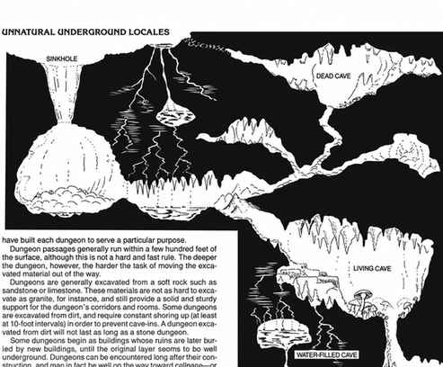

地下领域 · Realms
地下领域是地表深处由洞窟、地下城和来历不明的高大通道组成的广阔地下区域。地下领域很少位于距地表一英里以内的地方，而且往往比这深得多。
对大多数地表生物来说，这些领域充满神秘。关于它们的资料要么来自猜测，要么来自少数曾经造访这些地下领域、又活着返回并讲述经历的冒险者。
已知卓尔、深侏儒、灰矮人、kuo-toa 和德罗等种族居住在永远见不到阳光的广大地下区域。地下领域的真实范围只能猜测。
这些领域包含庞大的洞窟网络，其规模可能堪比一个完整国家；其中的地下水域也可能像地表海洋一样宽广。这些地下海同样拥有岛屿。有些广阔领域最好被称为荒野，因为那里没有任何文化繁荣；另一些地区则拥有足以与最先进文明相称的城市和堡垒。
许多居住在这些领域的生物，地表居民已经在地下城这个交汇地带遇到过，因为深地居民和地表居民最有可能在那里相遇。还有一些可怕生物甚至从不上升到地下城所在的高度；关于它们生活在地下领域深处的传闻很多，但没有活人能够证明它们的存在。

上一节：非天然地下地点 · Unnatural Underground Locales
下一节：地下世界的危险 · Hazards of the Underearth